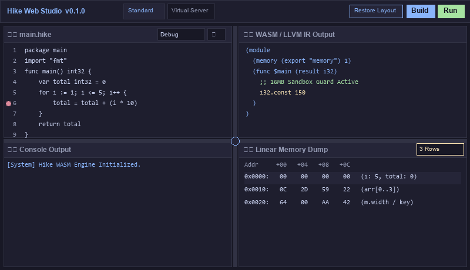

ステップデバッグ、多行メモリ監視、壁スプリッター移動、自動たたみの動作デモGIFアニメーションです。

JSグルーコードを一切介さず、ブラウザ内のHike WASMコアが瞬時にAST解析とLLVM IR/Wasmバイナリを生成・実行します。
行番号クリックで🔴ブレークポイントを設置。F10で1行進み、F5で次のブレークポイントまでスキップ実行します。
「1行/2行/3行表示」を動的変更可能。i, total などの変数名ラベルがメモリセル（0x0000）に表示され、16進/10進を切替可能。
垂直壁（左右）・水平壁（上下）をドラッグリサイズ。中央の円形十字ハンドルで4枠を同時に2D自由移動できます。
各枠ヘッダーの ⋮⋮ ハンドルをドラッグ＆ドロップすることで、枠の表示位置を相互に自由入れ替え可能です。
壁を端に寄せて枠幅が一定（<14%）以下になると自動たたみ。ヘッダーの「➖/➕」ボタンやダブルクリックで手動たたみも可能。
画面右上の「レイアウト復元」ボタンを押すと、壁の比率（5:5）・枠の配置・折りたたみ状態を一括で初期標準表示に戻せます。
標準フリー記述、仮想 Auth / Storage / Code Scanner ノード連携通信、アドバンスド（-O3, -g, 外部通信許可）の3モードを搭載。
総和計算、配列探索、XOR暗号化、Web APIパース、そしてStudio自身をセルフコンパイルする「演習5 (Studio自身)」コードを即座にロード。
Wasmサンドボックス分離、16MB (256 Wasm Pages) メモリ制限、無限ループを防ぐ10分間タイマー監視で安全デバッグを保証。
ヘッダーの 🌐 JP / EN ボタンをクリックすると、UIラベル・コンソールログ・取説ページ全体が日本語/英語にリアルタイム切り替わります。
WASM (WAT) および LLVM IR 出力パネルにリアルタイムのカラー構文強調表示を標準搭載。多行メモリダンプは 8 カラム (+00〜+1C) 完全対応し、空の領域も崩れず枠付きで正確表示されます。
PC上の .hike ファイルをエディタ上にドラッグ＆ドロップするだけで即時ロード。作成したソースコードの保存 (💾 保存) や、コンパイル済み WASM バイナリ (💾 WASM出力)、WAT テキスト (📜 WAT出力) のローカル出力が可能です。
Hike コンパイラ公式の「構造化HIR → WAT/WABT直結パイプライン」を Studio に接続。LLVM最適化パスによる命令の歪みやズレを完全に排除し、オミットされていたcompiled panel (WASM / WAT) 上の赤マーカー追従＆クロスコード薄青マーカー双方向連動を完全復活しました。
WebAssembly バイナリはブラウザの仮想マシン内で完全に隔離されて実行されます。ホスト PC のファイルシステムや OS 領域への直接アクセスは遮断され、範囲外参照発生時は WASM トラップで安全に停止します。
Wasm リニアメモリの最大サイズを 16MB に制限しており、大量のメモリ確保が発生してもブラウザがメモリ不足でクラッシュすることを防止します。
ステップ実行時にコードが無限ループに陥った場合でも、非同期タイマー監視ガードが作動し、10分間経過すると安全に実行スレッドを自動遮断します。
標準モードおよび仮想通信サーバーモードでは、外部 Web サーバーへの通信はブロックされます。アドバンスドモードで「外部通信許可」をチェックした場合のみ許可されます。